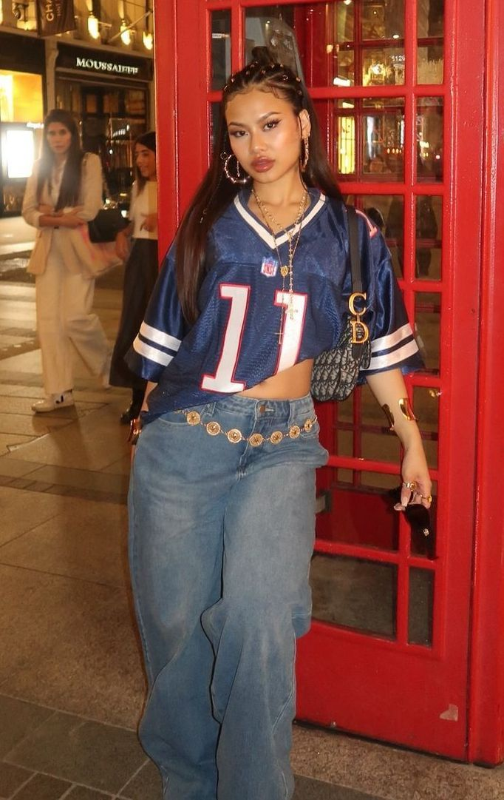

Hey, besties! Here I share my current inspirations, fashion finds, and fragrance obsessions. Let's get into the details!
This season, I'm obsessed with the mix of vintage vibes and bold street style. Check out the must-have pieces I'm eyeing:
My favorite look of the season:
Girl, don't just follow trends- curate them! Take one bold piece (like a Vivienne Westwood corset) and pair it with something super casual (like a loose Denim Tears tee). The high-low mix is always the key to looking effortlessly chic!
A good scent is the final accessory. These are my current go-to categories:
My Scent of the Day: **Essential Parfums: Rose Magnetic**.
Where I get my style fixes:
Thanks for stopping by! Check back soon for more style talk!